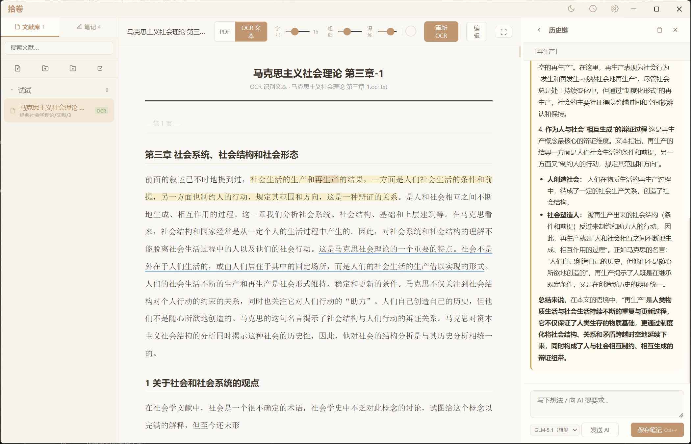
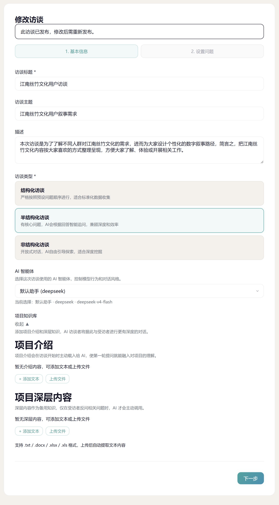
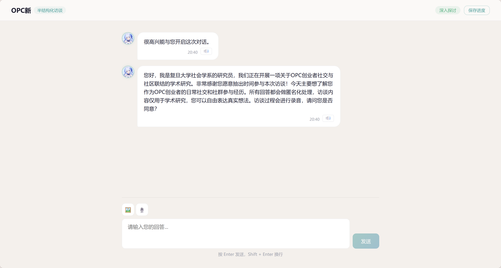
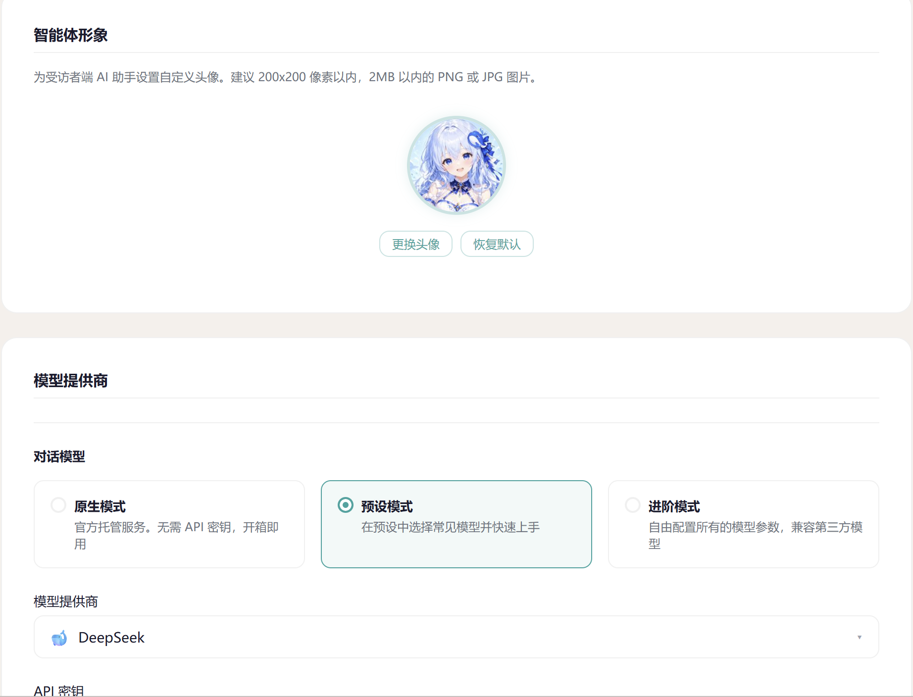

设计借鉴
致敬拾卷 ShiJuan
本网站设计风格借鉴自拾卷官网
拾卷 ShiJuan

让AI成为你的智能访谈者
面向社科研究者：设计访谈框架，AI以人格化方式与受访者自然对话——倾听、回应、追问、过渡，像真人访谈者一样
从框架设计到AI对话，完整的访谈解决方案
填写主题、描述、预设问题，选择访谈类型——结构化、半结构化或非结构化。
设置追问次数上限、超时时间、AI温度等参数，自定义系统提示词模板来塑造AI访谈者的人格。

AI以访谈者人格与受访者对话：自然开场、倾听回应、灵活追问、温暖收尾。
后台实时记录每个预设目标的覆盖状态，三种模式的追问策略不同，确保访谈既有效率又有深度。

严格按预设问题顺序执行，无追问。适合标准化调研。
问题顺序灵活，每个话题可追问N次。AI智能判断追问时机。
预设目标仅参考，自由探索。适合探索性研究。
灵活的AI服务配置：原生服务兑换码激活，或自备API密钥接入主流模型。
支持三种模式：原生模式、预设模式、进阶模式。多模态、ASR、TTS均可独立配置。

对话流完整记录，话题覆盖度可视化，AI自动生成摘要
每轮问答的时间戳、AI动作、覆盖目标完整记录。
话题覆盖度可视化展示预设目标完成比例，AI自动生成访谈摘要。支持导出为HTML（含样式）和JSON（原始数据）。
无需下载安装，浏览器直接访问。研究者端和受访者端分离，数据安全隔离。
JWT认证、密码加密存储、API Key后端隔离、访问码一次性使用验证。
支持本地私有化部署，数据完全掌控。定制开发十分容易，可洽谈合作。
从访问系统到第一次访谈，只需几分钟
网页端直接访问，无需下载安装。
研究者端： wenling-researcher.com
受访者端： wenling-respondent.com
访问研究者端需要注册，使用邀请码进行内测。首次使用会提示配置AI服务商或激活原生服务。
新建访谈项目 → 添加问题 → 发布 → 创建会话 → 把访问码发给受访者。受访者输入访问码即可开始访谈。
如果问灵对你的研究有帮助，欢迎支持开发者
扫码支持项目发展
请开发者喝杯咖啡
添加微信入内测群、获取最新动态、反馈使用体验
加开发者微信，备注「问灵」入内测群
本网站设计风格借鉴自拾卷官网
